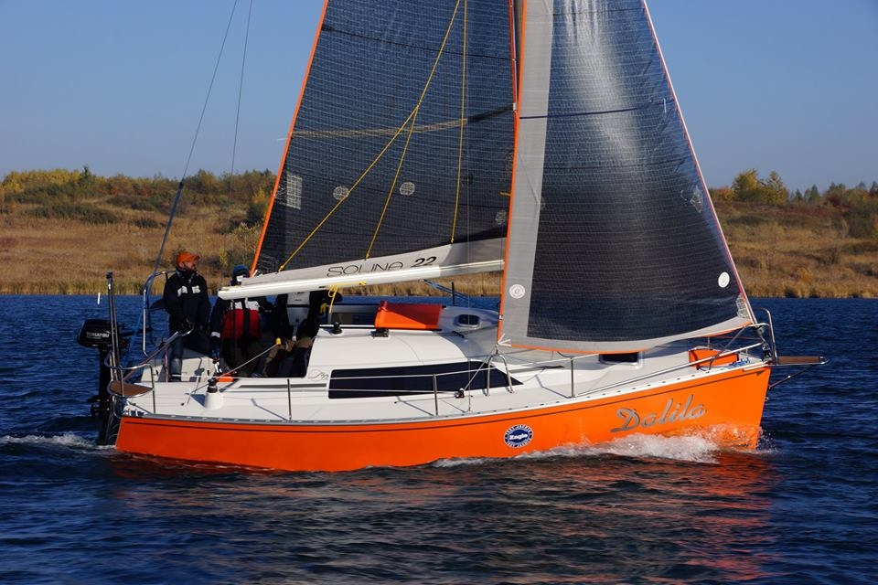
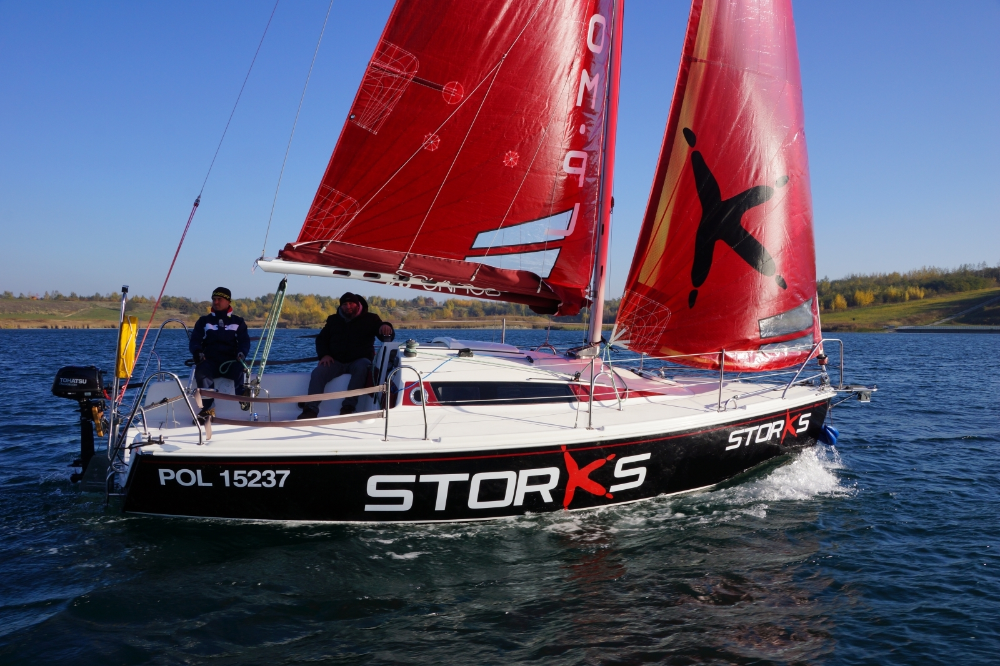
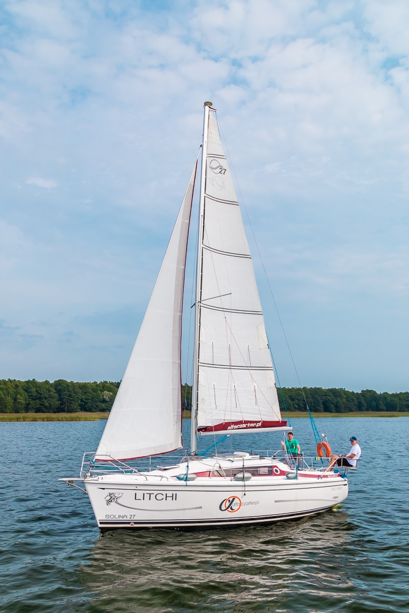

Żeglarstwo to nasza pasja!
Z tej pasji zrodziła się Stocznia Jachtowa Solina Yacht, w której od lat produkujemy wspaniałe jachty doskonale sprawdzające się w rejsach w chłodnej Skandynawii, jak i na ciepłych wodach morza Śródziemnego. Również w kraju nasze jachty mają wielu zwolenników i w zasadzie trudno znaleźć akwen po którym by nie żeglowały.
Naszym marzeniem jest to aby coraz więcej żeglarzy mogło się przekonać jak wspaniale się na nich żegluje. Dlatego też postanowiliśmy że, warto rozwinąć obszar naszej działalności i dać możliwość testowania naszych jednostek klientom zdecydowanym kupić nasz jacht oraz tym wszystkim którzy maja ochotę pożeglować i miło spędzić czas na pokładach naszych jachtów.
Tak powstała firma czarterowa Alfa Czarter!
Zapoznaj się z naszymi jachtami!
Solina 22
Solina 22 najmniejszy jacht z rodziny "Solina" przeznaczony dla żeglarzy ceniących sobie kameralne żeglowanie w komfortowych warunkach.
Pokład Soliny 22 daje dużo wygody pływającym na nim załogom. Oczywiście jak we wszystkich naszych jachtach komfort żeglowania zapewnia sprowadzone w całości do kokpitu olinowanie ruchome, roll-fok na sztywnym sztagu, grot na pełzaczach z lazy-jackiem. Czterokonny silnik Tohatsu zawieszony na solidnym pantografie zapewnia niezależność od warunków pogodowych oraz doskonale sprawdza się podczas manewrowania w porcie. Solidne kabestany wyposażone w korbę sprawią że kładzenie masztu za pomocą bramki staje się bardzo proste i łatwe nawet dla jednej osoby.
Solina 24
Solina 24 to szybki, zwrotny i jednocześnie bardzo wygodny jacht o ergonomicznym wnętrzu. Daje satysfakcję zarówno zwolennikom dużych rodzinnych wypraw jak i żeglarzom o bardziej sportowym zacięciu. Pięcioosobowa załoga wygodnie pomieści się w mesie i przestronnym kokpicie.
Komfort żeglowania zapewnia sprowadzone w całości do kokpitu olinowanie ruchome, roll-fok na sztywnym sztagu, grot na pełzaczach z lazy-jackiem. Czterokonny silnik Tohatsu zawieszony na solidnym pantografie na pewno nie zawiedzie kiedy tylko będzie potrzebny. Solidne kabestany samoknagujące wyposażone w korbę sprawią że kładzenie masztu za pomocą bramki staje się bardzo proste i łatwe nawet dla jednej osoby.
Solina 27
Solina 27 to duży, wygodny i bezpieczny jacht turystyczny o bardzo przestronnej mesie. Znakomite rozwiązania pozwalają wygodnie funkcjonować 7 osobowej załodze. Doskonale sprawdza się podczas żeglugi jak i w czasie portowych spotkań z przyjaciółmi. Idealny jako jacht rodzinny dla osób z dziećmi oraz dla tych którzy szukają komfortu. Jak i dla żeglarzy ze sportowym zacięciem.
Komfort żeglowania zapewnia sprowadzone w całości do kokpitu olinowanie ruchome, roll-fok na sztywnym sztagu, grot na pełzaczach z lazy-jackiem, zabudowany w studzience dziesięcio-konny silnik Tohatsu (sterowany manetką z rozruchem elektrycznym zamontowaną w kokpicie). Jacht wyposażony jest także w ster strumieniowy, zapewniający wygodne i bezpieczne manewrowanie w mazurskich portach. Solidne kabestany samoknagujace wyposażone w korbę sprawią że kładzenie masztu za pomocą ramki staje się bardzo proste i łatwe nawet dla jednej osoby.
Dane techniczne łodzi
| 22 | 24 | 27 | |
|---|---|---|---|
| Długość | 6,75m | 7,28m | 8,60m |
| Szerokość | 2,72m | 2,70m | 2,90m |
| Zanurzenie | 0,31-1,15m | 0,30-1,25m | 0,39-1,45m |
| Balast | 600 kg | 600 kg | 950 kg |
| Ciężar | 1500 kg | 1500 kg | 2610 kg |
| Pow. żagli | 23,1 m2; | 28,9 m2 | 33 m2 |